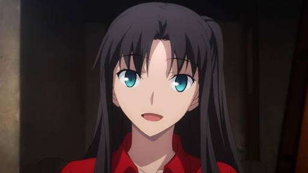
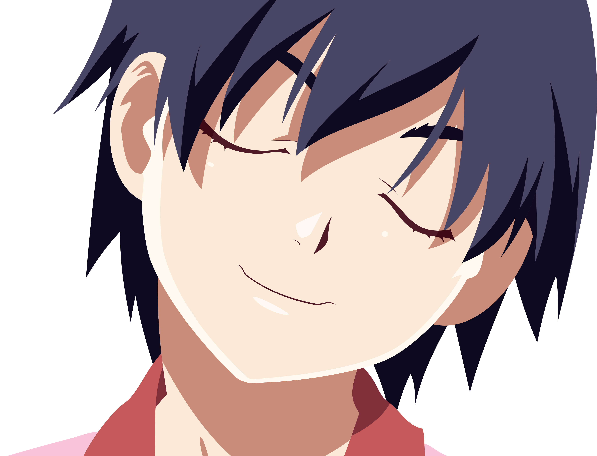
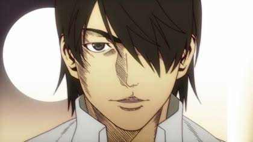
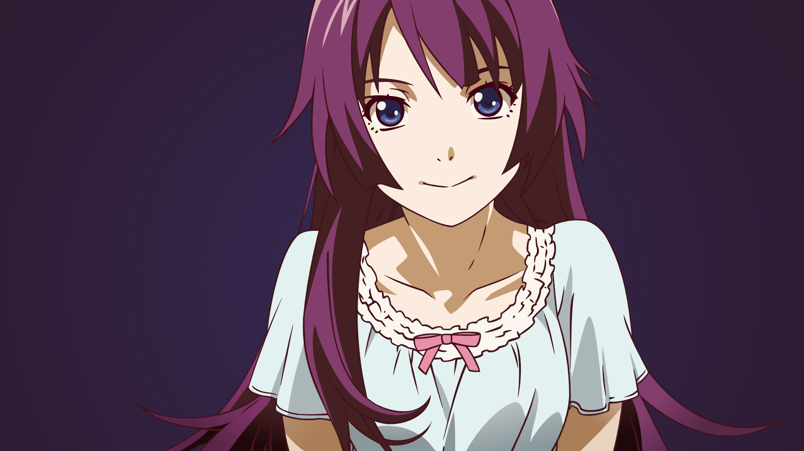
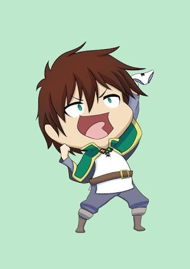

-
Rin

She is what you would call a tsundere, she's a nice person at heart that cares about her friends and family, she taught me thatIf you don't like the status quo, you are free to change it
. -
Kambaru

Kambaru is a very open person and isn't ashamed about anything, she is fun and sometimes very dependable. She likes to think of herself as a slave to Koyomi but it's all just one big joke. She taught me how to be myself and be open for everyone to see so I won't have anything to be ashamed of. -
Koyomi

He is a very nice person, if not the niceset in the wold, Koyomi can do anything just to help a friend, I like the way he noramlly jokes around and he might be a lolicon, not too sure about that. Koyomi is a good person generally. -
Hitagi

She is what you would call the perfect tsundere, she is a nice person at heart who cares about her friends and family and can do anything for them. She is someone anybody would want as a partner because she is very dependable and strong-willed and always wants her friends to move past their limits, supporting them all the way. She could be scary at times especialliy with sharp objects but she's a very beautiful person. -
Kazuma

Last but not the least for this list, it won't be complete with out him. Kazuma, first off, is a true gender equalist and also a very lucky person (kinda though). He is intellectual, funny and most of all, a NEET. He really doesn't want to do anything but would do something that would make him not do anything. He's a true friend, he taught me about true gender equality saying,I am a true gender equalist. Let's say a girl likes me and I do not know about that and start to hang out with another girl and she gets jealous and hits me, I would not hesitate to hit her back because that is equality
You can comment, sugsest or request by clicking here